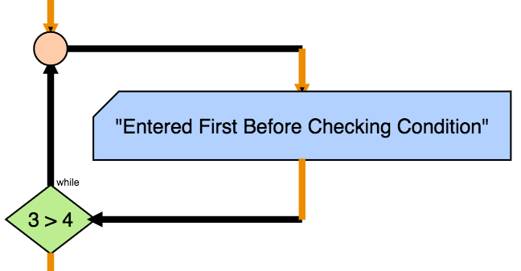

The Do While instruction repeats any instruction inside the Do While while the condition is true.
Against the while instruction this executes the first interaction before checking the condition.
DoWhile [condition] do
[instructions]
end DoWhile
